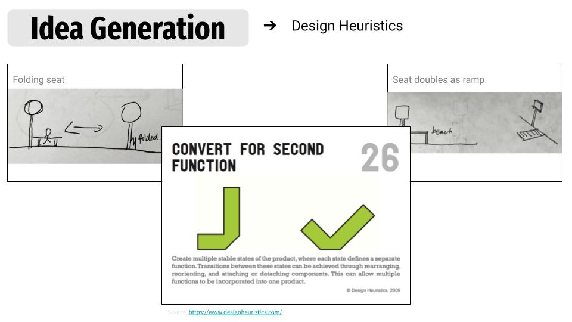

From insights to possibilities
In this phase, our team used structured creativity methods to generate as many ideas as possible, ensuring they were rooted in user needs while encouraging bold exploration.
We started by translating our HMW statements into concrete idea prompts. Through individual brainstorming and collaborative sketching, we generated over 100 ideas spanning signage improvements, seating innovations, accessibility enhancements, and tech integrations.
We then applied the Design Heuristics method, using a set of 77 cards developed by researchers to push our thinking in new directions. These heuristics helped us break habitual patterns and consider design variations we wouldn't otherwise have explored.
Selected Ideas
Automatically heated and cooled benches
Tree chunks as seatings
Tram from cross walk to bus stop
Light to indicate presence at stop
An additional traffic light to alert driver that someone's at the cross walk
Intelligent system to help pedestrians queue better
Transit map app to distinguish bus direction and stops
Bus direction sign on the road
We then applied the Design Heuristics method, using a set of 77 cards developed by researchers to push our thinking in new directions. These heuristics helped us break habitual patterns and consider design variations we wouldn't otherwise have explored.
We grouped ideas by theme, feasibility, and user value, and prepared to move forward with the most promising directions into prototyping.